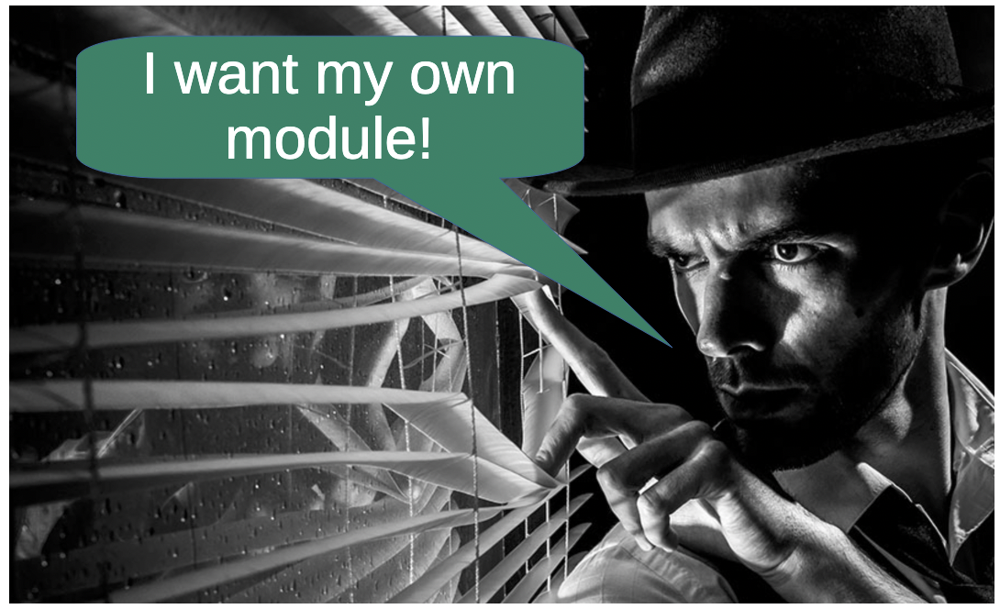
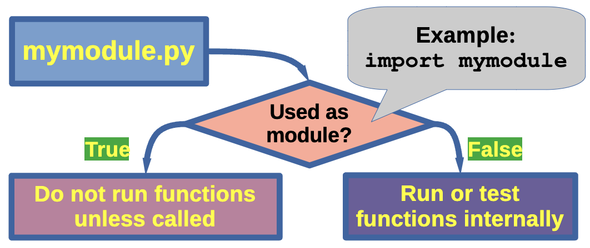

Creating Your Own Python Modules
Building Reusable Code and Exploring Python Libraries
On For Today
Let’s explore Python modules and libraries!
Topics covered in today’s discussion:
- 📦 What are Modules? — Organizing code into reusable components
- 🔧 Creating Your Own Modules — Writing and structuring custom modules
- 📥 Importing Modules — Different ways to use modules in your code
- 📚 Python Libraries — Exploring the ecosystem of useful libraries
- 🚀 Practical Examples — Building real modules from scratch
- 💡 Project Ideas — Math utilities, text processing, and more
- 🏆 Challenge Problems & Solutions — Practice what you’ve learned!

Why Modules Matter
Important
Real-World Applications
Every significant program is built from modules:
- 🔄 Code Reuse — Write once, use everywhere
- 🗂️ Organization — Keep related functions together
- 🤝 Collaboration — Share code across projects and teams
- 🧪 Testing — Easier to test smaller, focused modules
- 📖 Maintainability — Simpler to update and debug
- 🌐 Libraries — Access thousands of pre-built solutions
Note
The Big Idea: Modules are the building blocks of professional Python code. They transform scattered functions into organized, shareable tools that power everything from data science to web development!
Part 1: Understanding Modules
What Is a Module?
A module is simply a Python file containing definitions and statements.
- One
.pyfile = One module - Contains functions, classes, and variables
- Can be imported and used by other programs
- Helps organize code logically
Key Insight: Think of modules like toolboxes 🧰. Each toolbox (module) contains related tools (functions) that you can grab whenever you need them, instead of carrying everything around all the time!
Built-in Modules vs. Your Own Modules
Built-in Modules
Python comes with many ready-to-use modules:
- We have already worked with some of these!
- Already installed with Python
- Well-tested and documented
- Cover common tasks
Your Own Modules
You can create custom modules:
- Tailored to your needs
- Reusable across projects
- Easy to share with others
Build Your Own Modules!

But what if you need your own functionality?
But what if you need custom functionality that is not already in the standard library? That is where creating your own modules comes in! You can write your own code, organize it into modules, and use it just like any built-in module. Share them with the world! 🌍
Part 2: Creating Your First Module
Step 1: Create a Python File
Create a file named mathtools.py:
"""
mathtools.py - A module for useful math operations.
This module provides functions for common mathematical calculations.
"""
def square(x):
"""Return the square of x."""
return x ** 2
def cube(x):
"""Return the cube of x."""
return x ** 3
def is_even(n):
"""Check if a number is even."""
return n % 2 == 0
def factorial(n):
"""Calculate the factorial of n."""
if n <= 1:
return 1
return n * factorial(n - 1)Best Practice: Always include a docstring at the top of your module and for each function! 📝
Step 2: Using Your Module
Create a Program That Imports Your Module
Create test_mathtools.py in the same directory:
How it works:
import mathtoolsloads your module- Access functions using
modulename.functionname - The module file must be in the same directory (or on Python’s path)
Different Ways to Import
How to import depends on your programming needs!
Import Variations
1. Import the entire module:
2. Import specific functions:
3. Import everything (use sparingly!):
4. Import with an alias:
Import Best Practices
Choose the Right Import Style
✅ Good:
Bring in only what you need and be clear about where code comes from.
❌ Avoid:
Maybe you do not need to bring in everything from a module…
Tip
Rule of Thumb:
- Use
import modulewhen using many functions from that module - Use
from module import functionwhen using only a few specific functions - Avoid
import *in production code (okay for quick experiments)
Part 3: Module Structure and Organization
Anatomy of a Well-Structured Module
"""
Module docstring: Brief description of what this module does.
More detailed information can go here, including:
- Main features
- Usage examples
- Author information
"""
# Imports (if your module needs other modules)
import math
import random
# Constants (uppercase by convention)
PI = 3.14159
MAX_VALUE = 100
# Functions
def function_one():
"""Docstring for function_one."""
print("This is function_one.")
def function_two():
"""Docstring for function_two."""
print("This is function_two.")
# Classes (if needed)
class MyClass:
"""Docstring for MyClass."""
def __init__(self, value):
self.value = value
def method_one(self):
"""Docstring for method_one."""
print(f"Value is: {self.value}")
# Testing code (only runs when module is executed directly (not imported))
# However, if you import this module, the code below will NOT run, which is great for testing your module!
if __name__ == "__main__":
# Call your functions here
print("Running module tests...")
function_one()
function_two()
my_instance = MyClass(42)
my_instance.method_one() Note
👍 Keep your code readable for everyone! 👍
The Magic __name__ Variable (mymodule.py)
Understanding if __name__ == "__main__":
Best Practice: Having an if __name__ == "__main__": block allows a single Python file to act as a reusable library and a standalone script at the same time. The block prevents top-level code from running unintentionally, ensuring only necessary functions are run when used as an imported module. ✨
The Magic __name__ Variable (An import and a direct run)
Important
When you run: python mymodule.py
__name__equals"__main__"- The test code runs
When you import: import mymodule
__name__equals"mymodule"- The test code doesn’t run
Tip
The if __name__ == "__main__": block allows a single Python file to act as a reusable library and a standalone script at the same time. You can include test code or example usage in this block, which will only run when the file is executed directly, not when it is imported as a module. ✨
Module Structure Best Practices

Best Practice: Having an if __name__ == "__main__": block allows a single Python file to act as a reusable library and a standalone script at the same time. The block prevents top-level code from running unintentionally, ensuring only necessary functions are run when used as an imported module. ✨
Light Challenge 1 — Temperature Converter Module
Quick Practice!
Create a module called temperature.py with functions to convert between Celsius and Fahrenheit.
Requirements:
- Function
celsius_to_fahrenheit(c)— converts Celsius to Fahrenheit - Function
fahrenheit_to_celsius(f)— converts Fahrenheit to Celsius - Include docstrings
- Add test code in
if __name__ == "__main__":
Formulas:
- F = (C × 9/5) + 32
- C = (F - 32) × 5/9
Light Challenge 1 — Solution
Solution
Create a program temperature.py as the module.
"""
temperature.py - Temperature conversion utilities.
Provides functions to convert between Celsius and Fahrenheit.
"""
def celsius_to_fahrenheit(celsius):
"""Convert Celsius to Fahrenheit.
Args:
celsius: Temperature in Celsius
Returns:
Temperature in Fahrenheit
"""
return (celsius * 9/5) + 32
def fahrenheit_to_celsius(fahrenheit):
"""Convert Fahrenheit to Celsius.
Args:
fahrenheit: Temperature in Fahrenheit
Returns:
Temperature in Celsius
"""
return (fahrenheit - 32) * 5/9
if __name__ == "__main__":
# Test the functions
print("Testing temperature conversions...")
print(f"0°C = {celsius_to_fahrenheit(0)}°F")
print(f"32°F = {fahrenheit_to_celsius(32)}°C")
print(f"100°C = {celsius_to_fahrenheit(100)}°F")
print(f"212°F = {fahrenheit_to_celsius(212)}°C")Light Challenge 1 — Solution (Part 2)
Using Your Temperature Module
Now create a program weather.py to call your module.
import temperature
# Convert various temperatures
temps_c = [0, 20, 37, 100]
temps_f = [32, 68, 98.6, 212]
print("Celsius to Fahrenheit:")
for temp in temps_c:
f_temp = temperature.celsius_to_fahrenheit(temp)
print(f"{temp}°C = {f_temp:.1f}°F")
print("\nFahrenheit to Celsius:")
for temp in temps_f:
c_temp = temperature.fahrenheit_to_celsius(temp)
print(f"{temp}°F = {c_temp:.1f}°C")Light Challenge 1 — Solution (Part 3)
Output:
Your Turn – Your Own Module

Your turn to invent a simple module and use it in a program! Use the code on the next page to get started, or create your own from scratch. Be creative! You can make a module for anything you like — math, text processing, games, utilities, etc. The possibilities are endless! 🚀
Your Turn – Your Own Module (Some starter code!)
Important
Below is some starter code for a Fibonacci numbers module. You can use this as a base to create your own module, or write something completely different! Your mission is to use this code to create a module called fibonacci.py and then import it into a separate program to test it out.
# Two functions to handle Fibonacci numbers
def fib(n):
"""Write Fibonacci series up to n."""
a, b = 0, 1
while a < n:
print(a, end=' ')
a, b = b, a+b
print()
def fib2(n):
"""Return Fibonacci series up to n."""
result = []
a, b = 0, 1
while a < n:
result.append(a)
a, b = b, a+b
return result
if __name__ == "__main__":
# Test the functions
print("Testing Fibonacci functions...")Use this code or write your own!! Experiment and create something fun! Remember to include docstrings for future you. Use the if __name__ == "__main__": block to test your module as stand alone and direct run. 🎉
Part 4: Exploring Python Libraries
What’s the Difference?
Module: A single Python file with code you can import
Package: A directory containing multiple modules (plus an __init__.py file)
Library: A collection of packages and modules (broader term)
In practice: These terms are often used interchangeably!
The Python Standard Library 1
Batteries Included! 🔋
Python comes with a rich standard library — no installation needed:
Math and Numbers:
math— Mathematical functionsrandom— Random number generationstatistics— Statistical functionsdecimal— Precise decimal arithmetic
Text Processing:
re— Regular expressionsstring— String operationstextwrap— Text formatting
Date and Time:
datetime— Dates and timestime— Time functionscalendar— Calendar operations
File and Data:
os— Operating system interfacepathlib— Object-oriented pathsjson— JSON encoding/decodingcsv— CSV file reading/writing
Using Standard Library Modules
We have seen some of these modules before, but let’s explore a few more!
Example 1: Random Module
import random
# Generate random numbers
print(random.randint(1, 10)) # Random integer from 1 to 10
print(random.random()) # Random float from 0.0 to 1.0
print(random.uniform(1.5, 10.5)) # Random float from 1.5 to 10.5
# Choose from a list
colors = ["red", "blue", "green", "yellow"]
print(random.choice(colors)) # Pick one random color
# Shuffle a list
numbers = [1, 2, 3, 4, 5]
random.shuffle(numbers)
print(numbers) # List is shuffled in-place
# Sample without replacement
print(random.sample(colors, 2)) # Pick 2 different colorsUse cases: - Games (dice rolls, card shuffling) - Simulations - Random sampling - Password generation
Using Standard Library Modules
Example 2: Datetime Module
from datetime import datetime, timedelta
# Current date and time
now = datetime.now()
print(f"Current time: {now}")
print(f"Year: {now.year}, Month: {now.month}, Day: {now.day}")
# Format dates nicely
print(now.strftime("%B %d, %Y")) # March 28, 2026
print(now.strftime("%m/%d/%Y %I:%M %p")) # 03/28/2026 02:30 PM
# Date arithmetic
tomorrow = now + timedelta(days=1)
next_week = now + timedelta(weeks=1)
print(f"Tomorrow: {tomorrow.strftime('%A, %B %d')}")
print(f"Next week: {next_week.strftime('%A, %B %d')}")
# Calculate differences
birthday = datetime(2026, 10, 31)
days_until = (birthday - now).days
print(f"Days until Halloween: {days_until}")Tip
Use cases:
- Timestamps for logs
- Time tracking
Using Standard Library Modules
Example 3: OS Module
import os
# Get current working directory
print(f"Current directory: {os.getcwd()}")
# List files in a directory
print("Files in current directory:")
for file in os.listdir('.'):
print(f" - {file}")
# Check if file/directory exists
if os.path.exists("data.txt"):
print("data.txt exists!")
else:
print("data.txt not found")
# Get file information
if os.path.exists("myfile.txt"):
size = os.path.getsize("myfile.txt")
print(f"File size: {size} bytes")
# Create a directory
if not os.path.exists("new_folder"):
os.mkdir("new_folder")
print("Created new_folder")
# Get environment variables
user = os.getenv("USER") or os.getenv("USERNAME")
print(f"Current user: {user}")Project 1 — String Utilities Module
Building Text Processing Tools
Create stringtools.py:
"""
stringtools.py - Useful string manipulation functions.
A collection of functions for common text processing tasks.
"""
def count_vowels(text):
"""Count the number of vowels in a string."""
vowels = "aeiouAEIOU"
return sum(1 for char in text if char in vowels)
def reverse_words(text):
"""Reverse the order of words in a string."""
words = text.split()
return " ".join(reversed(words))
def is_palindrome(text):
"""Check if a string is a palindrome (ignoring spaces and case)."""
cleaned = "".join(text.lower().split())
return cleaned == cleaned[::-1]
def title_case_smart(text):
"""Convert to title case, but keep small words lowercase."""
small_words = {"a", "an", "the", "and", "but", "or", "for", "nor", "on", "at", "to", "by"}
words = text.lower().split()
result = []
for i, word in enumerate(words):
if i == 0 or word not in small_words:
result.append(word.capitalize())
else:
result.append(word)
return " ".join(result)Project 1 — String Utilities Module (Part 2)
More String Functions to Add to stringtools.py, as necessary
Important
Some of these functions include removing duplicate words, censoring bad words, and creating acronyms. Feel free to add your own functions as well!
def remove_duplicates(text):
"""Remove duplicate words while preserving order."""
words = text.split()
seen = set()
result = []
for word in words:
if word.lower() not in seen:
result.append(word)
seen.add(word.lower())
return " ".join(result)
def censor_words(text, bad_words):
"""Replace bad words with asterisks. Bring in the bad_words list from an external file or define it in your module."""
words = text.split()
censored = []
for word in words:
if word.lower() in [bw.lower() for bw in bad_words]:
censored.append("*" * len(word))
else:
censored.append(word)
return " ".join(censored)
def acronym(text):
"""Create an acronym from a phrase."""
words = text.split()
return "".join(word[0].upper() for word in words if word)
if __name__ == "__main__":
print("Testing stringtools module...")
print(f"Vowels in 'Hello World': {count_vowels('Hello World')}")
print(f"Reverse: {reverse_words('Hello World')}")
print(f"Is 'racecar' a palindrome? {is_palindrome('racecar')}")
print(f"Title case: {title_case_smart('the lord of the rings')}")
print(f"Acronym 'Portable Network Graphics': {acronym('Portable Network Graphics')}")Project 1 — Using String Utilities
Practical Application: stringtools_app.py
import stringtools # bring in your stringtools module
# Analyze text
text = "The quick brown fox jumps over the lazy dog"
print("Text Analysis")
print("=" * 50)
print(f"Original: {text}")
print(f"Vowel count: {stringtools.count_vowels(text)}")
print(f"Reversed words: {stringtools.reverse_words(text)}")
print(f"Is palindrome: {stringtools.is_palindrome(text)}")
print(f"Smart title: {stringtools.title_case_smart(text.lower())}")
# Test palindromes
palindromes = ["racecar", "A man a plan a canal Panama", "hello"]
print("\nPalindrome Testing:")
for p in palindromes:
result = "✓" if stringtools.is_palindrome(p) else "✗"
print(f"{result} '{p}'")
# Create acronyms
phrases = [
"Portable Network Graphics",
"HyperText Markup Language",
"Light Amplification by Stimulated Emission of Radiation"
]
print("\nAcronyms:")
for phrase in phrases:
print(f"{phrase} → {stringtools.acronym(phrase)}")You Now Know How To …
Note
✅ Create your own Python modules
✅ Import and use modules in different ways
✅ Structure modules with docstrings and best practices
✅ Use the if __name__ == "__main__": pattern
✅ Explore and use Python’s standard library
✅ Build reusable code libraries
✅ Validate and sanitize user input
✅ Organize code for maintainability and reuse
Important
Keep building! Modules are the foundation of professional Python development. 🚀